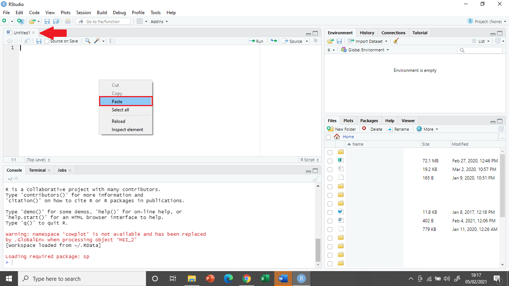
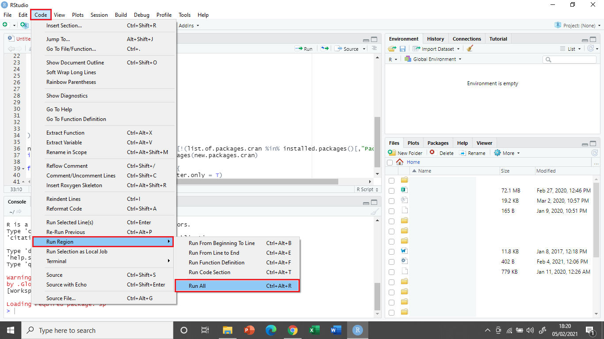
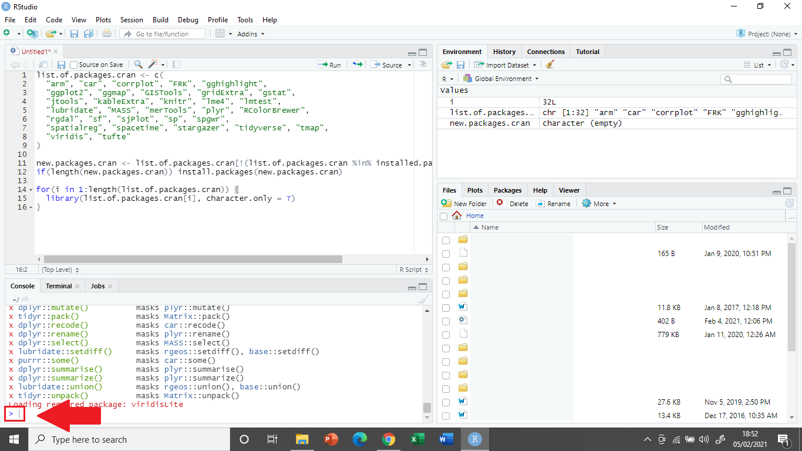
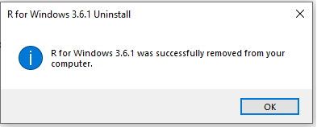

Windows 10 Home/pre-10
This guide covers the installation of R and RStudio on machines running Windows 10 Home Edition or versions of Windows prior to Windows 10 (e.g. Windows 7). With this approach, you will install R and RStudio “natively,” that is running directly on your operating system. If you are not sure what version of Windows you are running, check out this guide.
IMPORTANT:
This module has been written using the most up-to-date versions of R, RStudio and relevant packages. To avoid software compatibility issues it is important you have these same versions installed on your home computer.
Therefore, if you have R or RStudio already installed on your computer, please first uninstall them unsing the instructions here.
Download and Install R
Download R
R is the coding software that will execute the code you write in RStudio.
NOTE: You need to install R before you install RStudio
- Open the R download page in your browser and click on Download R for Windows.

- Click on base (highlighted in red here) as you are installing R for the first time.

- Click on Download R 4.0.3 for Windows (highlighted in red here) to start the download.
Install R

- Navigate to your Downloads folder and double click on the R-4.0.3-win file.
NOTE: Once you double click on the file, a window might pop up that asks you if you want to allow this app to make changes to your device click YES to continue the installation

- A new window will pop up asking you to select a language for the installation. Select English and click OK.

- The next window shows the Terms and Conditions. Click Next to continue with the installation.

- The next window will ask you to specify where you would like to install R. Leave the default settings and click Next.

- The next window will ask you what components of R you want to install. Leave the default settings (all boxes ticked) and click Next.

- The next window will ask you if you want to customise the startup options.
- Select No and click Next.

- The next window will ask you to select/name a start menu folder.
- Leave the default settings (R) and click Next.

- The next window will ask you to select additional task that will be performed while installing R.
- Leave the default (Additional shortcuts unticked,Registry entries ticked) and click Next .

- R will now install.

- Once the installation is complete, click Finish.
Download and Install RStudio
Download RStudio
R-Studio is the R user interface in which you can code.

- Go to the R-studio download page.

- On the download page, scroll down and click on the Download button under RStudio Desktop.

- Click on Download RStudio for Windows to download the installation file
Install RStudio

- Navigate to your Downloads folder and double click on the RStudio-1.4.1103 file.
NOTE: Once you double click on the file, a window might pop up that asks you if you want to allow this app to make changes to your device click YES to continue the installation

- In the installation window that opens, click Next.

- In the next window, you can specify where you want to install RStudio.
- Leave the default settings and click Next.

- The next window will ask you to choose a Start Menu Folder.
- Leave the default settings (RStudio) and click Next.

- RStudio is now installing.

- Once the intallation is completed, click on Finish.
Open RStudio

- To open RStudio, click on the Windows logo in the left bottom corner of your screen and either type RStudio or look for the RStudio folder in the menu.
- Double click on Rstudio to open it.
Install Packages
In order to complete the course, you will need to have installed all the required packages. The simplest way to do this is to run the below code in RStudio.
list.of.packages.cran <- c(
"arm", "car", "corrplot", "FRK", "gghighlight",
"ggplot2", "ggmap", "GISTools", "gridExtra", "gstat",
"jtools", "kableExtra", "knitr", "lme4", "lmtest",
"lubridate", "MASS", "merTools", "plyr", "RColorBrewer",
"rgdal", "sf", "sjPlot", "sp", "spgwr",
"spatialreg", "spacetime", "stargazer", "tidyverse", "tmap",
"viridis", "tufte"
)
new.packages.cran <- list.of.packages.cran[!(list.of.packages.cran %in% installed.packages()[,"Package"])]
if(length(new.packages.cran)) install.packages(new.packages.cran)
for(i in 1:length(list.of.packages.cran)) {
library(list.of.packages.cran[i], character.only = T)
}- Copy the code above by clicking the button to the top right of the code chunk which says Copy to clipboard when you hover over it.

- Open RStudio and click the image of a ‘white and green plus sign on top of a white square’ that says New File when you hover over it. Then, from the drop-down menu that appears, click on the option R Script.

A new window with a blank background and the heading Untitled1 (indicated by red arrow above) should appear.
Paste the copied code into this window by right-clicking and selecting Paste.

Click on the Code menu at the top of the screen. Select Run Region from the drop-down menu, then click Run All from the second drop-down menu.
This should install all the packages you need to complete the ‘Spatial Modelling for Data Scientists’ module.
NOTE:
The script will install several dozen packages on your computer. This could take around 20-30 minutes to complete, depending on you computer and bandwidth.

- Once the code has finished running, a blue arrow with a gray vertical line next to it (indicated by red arrow above) will appear at the bottom of the Console window at the bottom left of the screen. This means R has finished the task it was given and is ready for it’s next command.

- You can now close the R Script file you created by clicking on the
xnext to the header Untitled1 (indicated by red arrow above). You do not need to save the file.
Congratulations!!! You have now successfully installed R, RStudio and all packages required to complete the course!
You can now start coding.

Uninstall R and RStudio
This section shows how to uninstall programs on Windows 10 Home Edition. You only need to read this section if you have an older version of R or RStudio already installed on your computer.

- Right click on the Windows logo in the left bottom corner of your screen and click on Settings.

- At the Settings menu, click on Apps.

This should take you to a page called Apps & features, where you can select programs to uninstall. Scroll down until you see any program relating to R or RStudio (in this case ‘R 3.6.1,’ RStudio and ‘Rtools version 3.5’).
Click on the program you wish to uninstall and select Uninstall.
NOTE: Once you click Uninstall, a window might pop up that asks you if you want to allow this app to make changes to your device click YES to continue.

- You will then be asked whether you are sure you want to remove the program. Click Yes.

- The program is now uninstalling.

- Once this is complete, you will get a message confirming that the installation was successful. Click OK.
CONGRATULATIONS YOU HAVE NOW SUCCESFULLY UNINSTALLED THE PROGRAM!
Make sure to repeat this process until all programs relating to R (i.e. R, RStudio and Rtools) have been uninstalled from your machine.